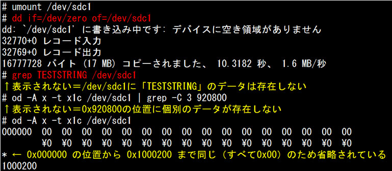

- 問題ID : 21797 バックアップとリストア
- 履歴
正解
「dd if=/dev/zero of=/dev/sdc1」を実行する
「dd < /dev/urandom > /dev/sdc1」を実行する
解説
セキュリティ対策の一環として、廃棄、貸出する磁気ディスクの中身を消去するのは重要な作業です。データが残ったままだと、情報漏えいのリスクが高くなります。そのため、正しいデータ消去の方法を知っておく必要があります。
一度書き込まれたデータは、削除操作の時点ではデータが消されるのではなく「データのない領域」という管理情報が設定されます。そのため、単純な削除作業だけでは実データが残ってしまうため、「全ての領域を別のデータで上書きする」という方法が適切です。
連続してデータを書き込み続けるには「dd」コマンドを使用します。ddコマンドは、入力として指定されたファイルから出力先に指定されたファイルへ、データを直接書き込みます。
ddコマンドの書式と主なオプションは以下のとおりです。
dd [オプション]
※入力ファイル、出力ファイルは標準入力、標準出力のリダイレクトでも代用できます。
この時、入力に以下のいずれかの特殊ファイルを指定してデータの上書きを行います。
・/dev/zero：16進数のデータ「0x00」を生成する特殊ファイル
・/dev/urandom：擬似乱数を生成する特殊ファイル
よって正解は
・「dd if=/dev/zero of=/dev/sdc1」を実行する
・「dd < /dev/urandom > /dev/sdc1」を実行する
です。
実例を元に解説します。
以下のように、何もデータの無い /dev/sdc1 が存在するディスクを用意しました。
この /dev/sdc1 に ext4 のファイルシステムを作成します。
ファイルシステムを作成した /dev/sdc1 をマウントし、データを書き込み、通常の操作で削除してみます。この時、書き込んだデータがきちんとディスクに書き込まれるよう、「sync」コマンドを使っています。
ファ
イルシステム上からは消えてしまった「testfile」ファイルと、書き込まれた「TESTSTRING」の文字列ですが、以下のようにgrepや
stringsコマンドを使ってデバイスファイル /dev/sdc1 を直接参照するとディスク上にデータとして残っていることがわかります。
stringsコマンドは、バイナリデータの中から文字列として画面表示可能なデータを出力します。以下の実行例では、データの存在する位置情報（0x920800）も合わせて出力させています。
では消去を目的として、ファイルシステムの変更を行ってみます。今回は ext4 → xfs に変更してみます。
しかし、ファイルシステムを変更してもデータは残ったままです。ファイルシステムの作成時は管理領域が新規に作成されるだけですので、データ領域までは上書きが行われないため、既存のデータが消えずに残ってしまうのです。
そのため、確実なデータの消去のためには上書きをするしかありません。以下のように /dev/zero から /dev/sdc1 に 0x00 のデータを書き込むことで、残っていたデータも 0x00 で上書きされ、参照できなくなります。

この時、ファイルシステムの管理領域の情報も全て 0x00 で上書きされてしまいます。ですので、再利用する場合はファイルシステムの作成が必要になります。
また /dev/urandom を入力として擬似乱数を書き込むことでも、既存のデータを上書きして参照できなくすることができます。
その他の選択肢については、以下のとおりです。
・/dev/sdc1を/mntにマウント後、「rm -rf /mnt/*」を実行する
・「mkfs.ext3 -f /dev/sdc1」を実行する
上記実行例のとおり実データが残る場合がありますので、誤りです。
・「rm -f /dev/sdc1」を実行する
デバイスファイルを削除しても、物理デバイス上のデータを削除することはできませんので、誤りです。
なお、上記のように不正にデータが読み出されないようにするため、/dev/sdc1 などのディスクを示すデバイスファイルは、以下のように一般ユーザが直接読み書きできないパーミッションに設定されています。